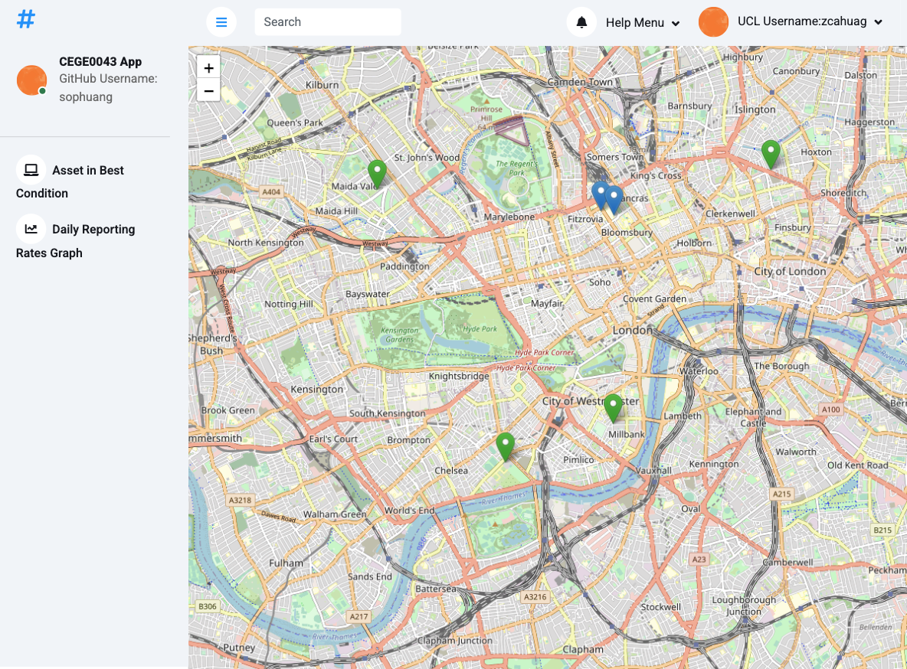

User Guidance for Asset Point Creation
Map view
- When the application is opened on a large screen, the Asset Point Creation application starts working.
- When the page is loaded, you should see a map, with the assets marked by the current user.

- The different colors of the markers indicate the latest condition of that asset:
-
 'Element is in very good condition'
'Element is in very good condition'
-
 'Some aesthetic defects, needs minor repair'
'Some aesthetic defects, needs minor repair'
-
 'Functional degradation of some parts, needs maintenance'
'Functional degradation of some parts, needs maintenance'
-
 Red: 'Not working and maintenance must be done as soon as reasonably possible'
Red: 'Not working and maintenance must be done as soon as reasonably possible'
-
 Violet: 'Not working and needs immediate, urgent maintenance'
Violet: 'Not working and needs immediate, urgent maintenance'
-
 Blue: default color and 'Unknown' condition
Blue: default color and 'Unknown' condition
- Click on the markers, the Asset Name and the latest condition will pop up.
Asset Creation
- To create a new asset, you just need to click a point on the map, and then a creation form will pop up.
- In this form, you need to provide the following information:
- Name of the asset. The asset name cannot be an empty string and it must be unique. The asset name cannot be used by other users. If the name is not valid or has been taken, an alert message will tell you.
- Installation date. You must provide the installation date; otherwise, an alert message will pop up.
- Location of the asset: The location of the asset will be captured by your click automatically. The location will be shown on the form.
- Finally, click the "Save Asset Data" button to create the asset and store the asset data into the database.
Other Functionalities
- In the side-bar menu, there are two functionalities:
- Asset in Best Condition:
- Click this, and the information about all the assets with the best condition will be shown in the popup HTML in the middle of the map.
- You can scroll down to see all the details and click the close button to exit.
- Daily Reporting Rates graph:
- Click this, and a bar chart showing daily condition reporting rates in the database for the past week will appear.
- The blue bars show the daily number of condition reports submitted.
- The green bars show the daily number of condition reports
with the following conditions:
- 'Not working and maintenance must be done as soon as reasonably possible'.
- 'Not working and needs immediate, urgent maintenance'.
- Click the close button on the top left to exit.